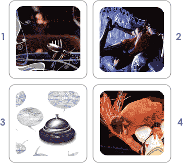

issue eleven out now, in this issue:
1. dinner is better with macgyver
there are just certain situations call for a man of action, a man of resolve, a man of decisive strategy. militia strikes, for example. or chemical weapon threats. and, of course, dinner parties. editor-in-chief nicholas ziegler lets you know why macgyver should be the guest of honor at your next soiree.2. victorian error
in the “age of innocence” and during “the importance of being earnest,” the victorian era was decadence at its finest. fashion editor stephanie mcniel reappropriates the style among the faux settees that line milwaukee avenue.3. chicago concierges: a lesson in deference and couture
they’re serving up chicago on a platter. two of chicago's finest hosts dish the dirt on what it's like to be a concierge. this month adam watkins went to the palmer house hilton and the drake hotel and got more than just lip service.4. lucha va voom
what do you get when you get wrestlers who don’t like taking their masks off and women who like taking their shirts off in the same room? the greatest form of entertainment ever, of course. photographer/writer joe gallo explores the land of lucha va voom.


1259 N. Milwaukee Ave Chicago IL 60622